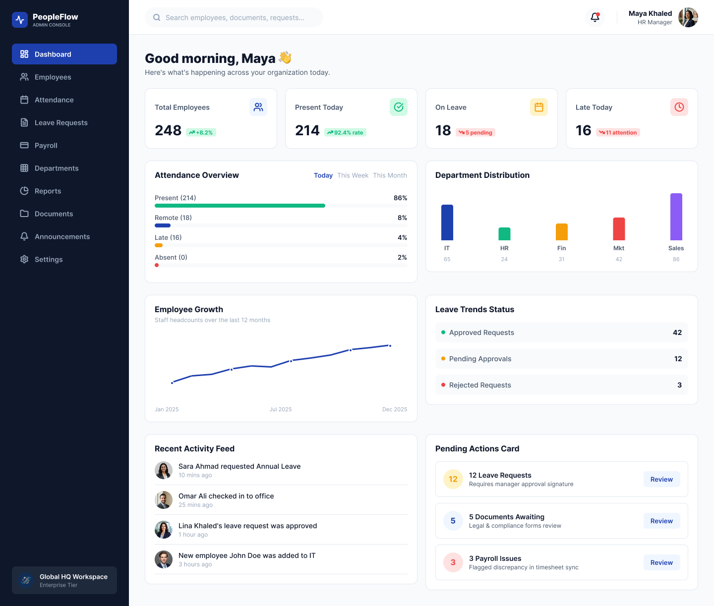
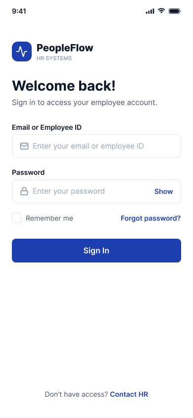
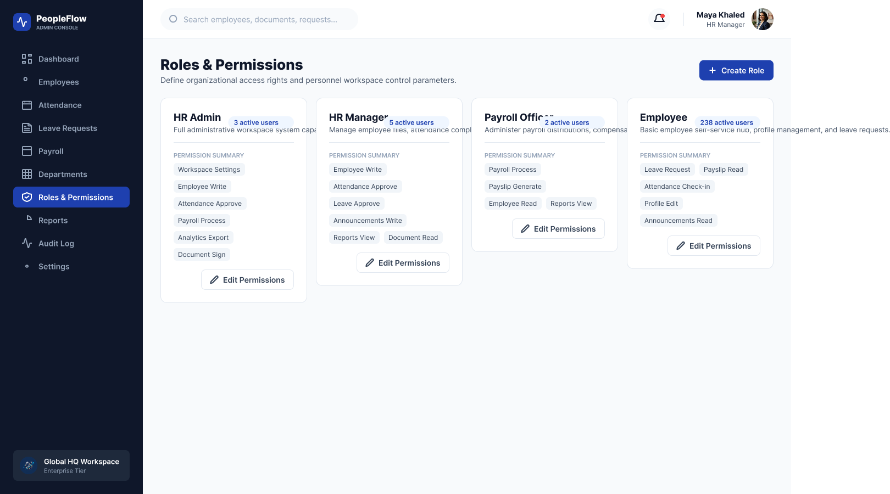
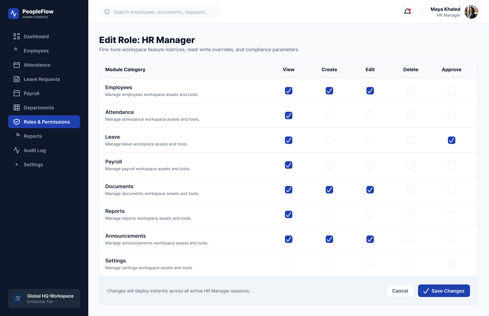
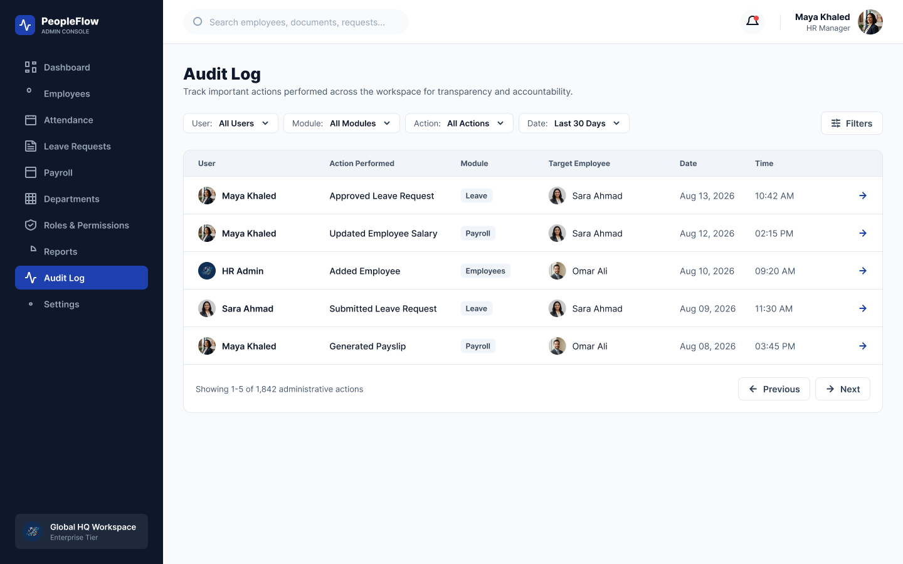
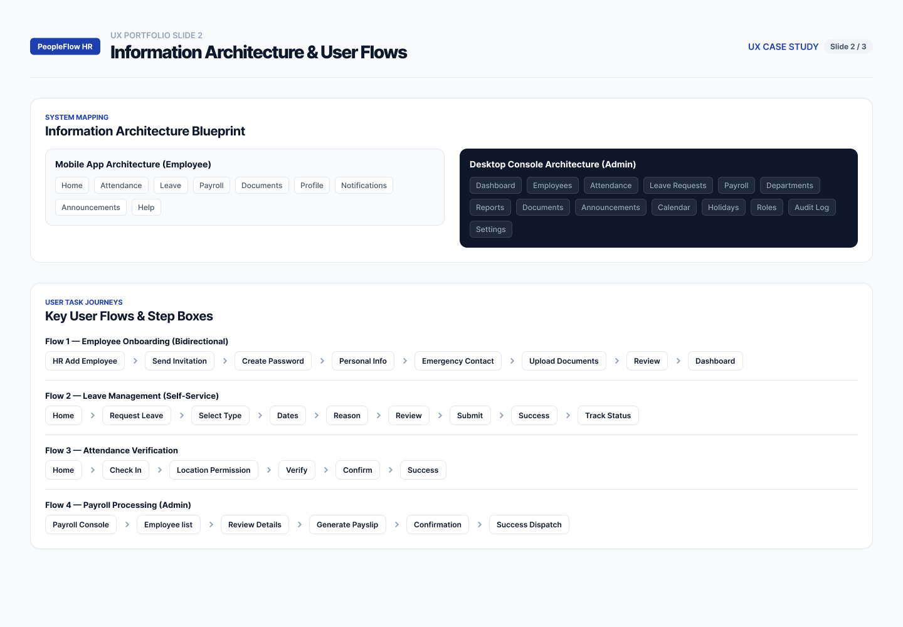
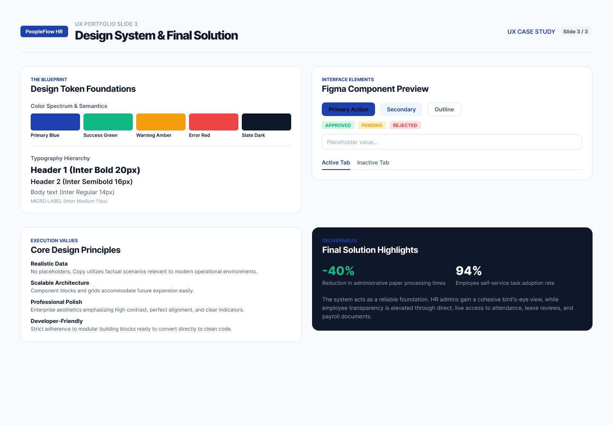

HR
System
Employee & HR Management Platform
View Figma Prototype ↗
A smarter way to
manage people and processes.
HR System is a digital platform designed to simplify employee management, attendance, leave requests, payroll, notifications, and administrative workflows in one connected experience.
HR management shouldn't feel fragmented.
Employees need to manage different HR tasks such as attendance, leave requests, payroll information, notifications, and personal data.
At the same time, HR teams need a centralized environment to manage employees, requests, attendance, permissions, and administrative workflows efficiently.
One connected platform for employees and HR teams.
HR System brings employee self-service and HR administration together in one structured digital experience.
Employees can manage their daily HR needs while administrators can monitor, manage, and control workforce operations from a centralized dashboard.
Employee Management
Manage employee profiles, personal information, employment details, and workforce records.
Attendance & Time
Track attendance, working hours, check-ins, check-outs, and employee time records.
Leave Management
Employees can submit leave requests while HR can review, approve, reject, and track requests.
Payroll
Give employees access to payroll and salary information through a centralized experience.
HR Requests
Centralize employee requests and provide clear status tracking throughout the approval process.
Roles & Permissions
Define what each role can view, edit, approve, or manage across the system.
HR Admin Dashboard
Give HR teams a centralized overview of employees, requests, attendance, and important HR activity.
Audit Log
Track important administrative actions and system activity for better transparency and control.
Global Search
Quickly find employees, records, requests, and relevant information across the system.
Designed around the
employee experience.



A centralized workspace
for HR teams.


Designed for
controlled access.


Making complex systems
easier to navigate.



From complex workflows
to a clearer experience.
Discover
Understanding the needs of employees and HR teams and identifying the main workflows that needed to be simplified and centralized.
Define
Structuring the employee and administrator experiences around clear workflows, permissions, requests, attendance, and workforce management.
Design
Creating a consistent interface system across employee-facing screens and the HR administration dashboard.
Refine
Refining layouts, navigation, forms, dashboards, states, and interactions to create a consistent and scalable experience.
Structuring the system
around real workflows.

A consistent visual
language across the system.

Access the HR system securely.
View attendance, leave, payroll, and personal information.
Submit HR requests and follow their status.
Receive notifications and monitor important updates.
Access the administrative dashboard.
Review workforce information and system activity.
Manage employees, requests, attendance, and permissions.
Track activity through search, reports, and audit logs.
A clearer way to manage the workforce.
HR System connects employee self-service with centralized HR administration, creating a more organized and accessible experience for both employees and HR teams.
My Role
UI/UX Designer
Tools
Figma · UI/UX Design · Prototyping
Platform
Web Application · Mobile Experience